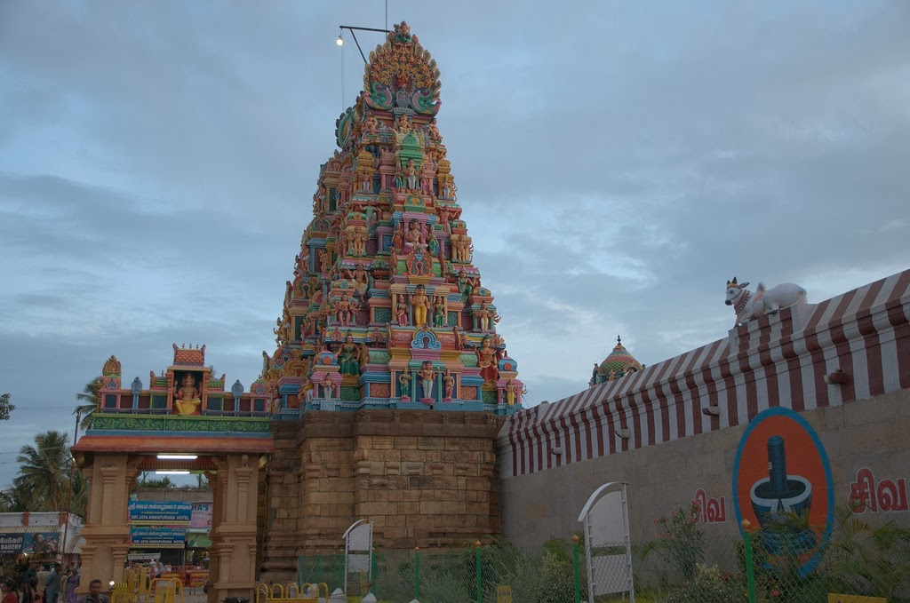

Coimbatore is an eclectic cultural extravaganza.
An integral thread in the state's traditional
textile industry, Coimbatore is the hub of the
world-renowned 'Village Cot' sarees and exquisite
gold and diamond cut jewellery, which have earned
it its moniker of the Manchester of the South.
Dotted with scenic waterfalls surrounded by rolling
green hills, Coimbatore enjoys a pleasant climate
throughout the year, thanks to the Palghat Gap in
the Western Ghats that ensures there is an
uninterrupted stream of cooling wind blowing through.

About Tour
Day 1:
Kasthuri Sreenivasan Art Gallery & Textile Museum
Ukkadam-Valankulam Lake
VOC park and zoo
Gass Forest Museum
TNAU Botanical Garden
Day 2:
Pattiswarar temple
Marudhamalai temple
Adiyogi
Velliangiri Hills